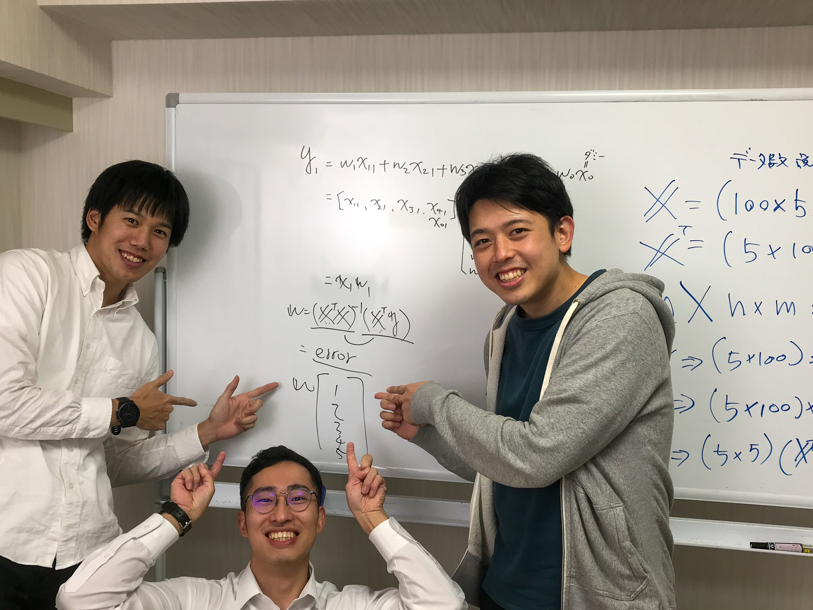
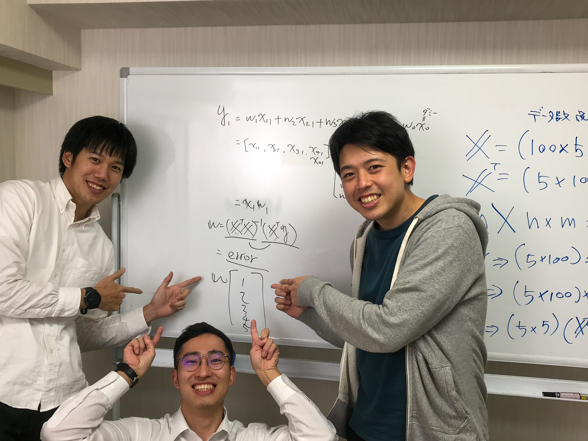
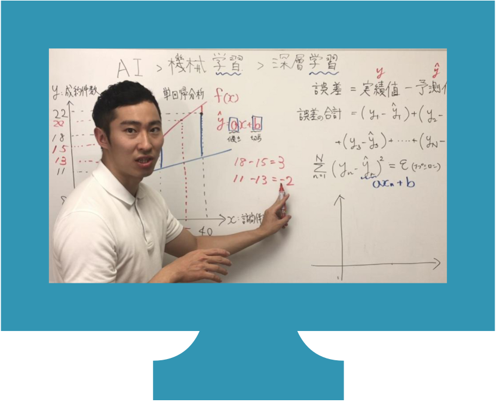
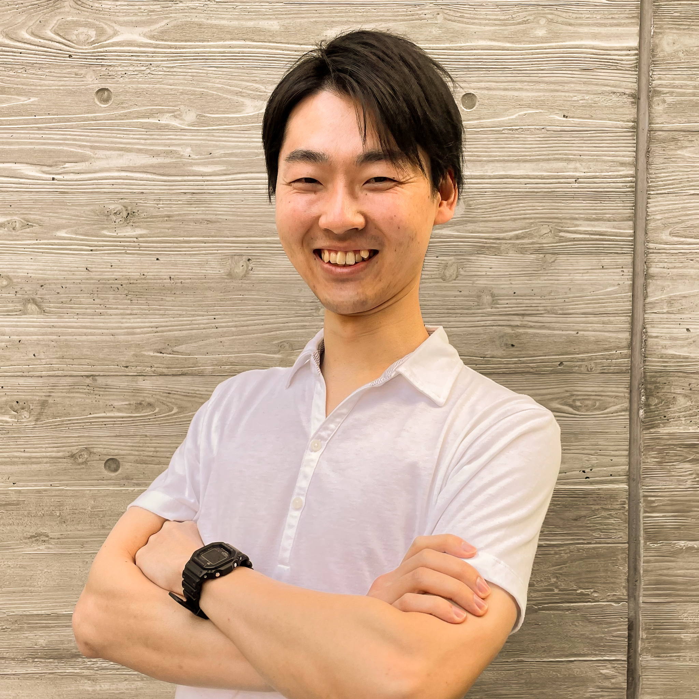

受験のためではなく、武器として「数学」を学びたい人へ
AIの本質を理解し仕事に活かしたい

上司から「回帰分析しておいて」と言われて、とりあえず「はい」と答えてしまった
「教科書」での学び直しに挫折してしまった人へ
無味乾燥な数式や計算でつまらない
役立つ実感がしない
役立つ実感がしない
結局、一人では勉強が続かない
数学の学びを
アップデート
する
数学ブートキャンプ
数学を学ぶ「楽しさ」、「使える」にこだわった７日間の数学体験

1. ゴール逆算型のカリキュラム・教材
「実社会の問題解決」というゴールから逆算して、中学数学からAIまでを一気通貫で学ぶから、「数学を学ぶ意味」、「面白さ」が分かる
2. コーチングによる数学的思考の習得
コーチとの対話を通じて、「自分の言葉で数学を語れる」力を徹底的に鍛えるから、公式の暗記ではない「数学的思考力」、「実践力」が身につく
学習スタイル
Step 1
ビデオ教材で予習

Step 2
マンツーマンのコーチング(オンライン可)

受講後の到達地点
- AI（機械学習）の数学的な本質（ロジック）を理解し、人に説明できる
- ビジネスの現場で役に立つ統計手法（重回帰分析、ロジスティック回帰分析、クラスタリング等）をExcelで使いこなせるようになる
- AIに必要な中学～大学の基礎数学の習得（関数、微分、線形代数、確率統計等）
※モニターテスト期間中のため学習内容は随時変更となる可能性がございます
学ばないこと
- 大量の計算問題（計算能力の向上を目的としたプログラムではありません）
- プログラミングや分析ツールの使い方（Excelの使用を想定しています）
commentモニター参加者の声
これからの営業マンにこそ必要な学び！
- 高校時代に「必修だから」という理由だけで学んでいた数学が、実際のビジネスに活かせるということがとても新鮮に感じられ、楽しく受講できています。早く実際のビジネスに活かしていきたいです。
- 社内のデータアナリストやAIエンジニアと同じ目線で会話したいと思ってる営業マンにお勧めしたいです。
faceMさん・営業職
数学への苦手意識を克服したかった！
- 参加を決めたのは、学生時代、理系なのに数学が大嫌いだったこともあり、その苦手意識を克服したいと常々思っていたためです。
- 記憶の彼方に飛んでいた高校数学の微積や行列がこんな風に実社会で活用できるのかと感動しました。大学時代は実験結果をExcelで複雑に処理する機会も多かったのですが、ようやくそれらの意義を理解できました。
faceIさん・ITエンジニア
独学の「つまづき」が解消されました！
- これまでExcelを用いてデータ分析を行ってきましたが、それぞれの分析手法の数学的な背景については理解していなかったため、改めて学び直したいと考えていました。
- 専門書で省かれがちな公式を導くプロセスが丁寧に解説され、また業務上のシーンを想定して講義が組まれているため、実践的に学習できていると感じています。
faceSさん・コンサル職
高校時代をやり直したいと思える数学とAIの学びです！
- AIの本質である数学を、ビジネスシーンから逆算して学べるので、「AIになにができて、できないのか」といった本質的な理解を深めたかった非エンジニアの自分にピッタリでした。
- コーチとのマンツーマンの対話によって、「気づき」が得られ、復習意欲が湧きます。人はこうやって成長するのかということも学べました。
faceTさん・企画職
メンバー紹介
近藤啓太代表
- 慶應義塾大学法学部法律学科卒業
- 日本政策投資銀行にて投融資を多数経験した後、デロイトトーマツFAの事業再生チームにて、営業改革等をリード。現在は、自身の数学学習の経験から、数学教育を変えることを決意し、本事業の立ち上げに取組んでいる
長谷航記現役AIエンジニア
- 慶應義塾大学大学院理工学研究科修士課程修了。人の思考のモデル化に興味を持ち、人工知能研究を始める
- 富士ゼロックス、トヨタ自動車にて、一貫してデータサイエンス業務、AI（機械学習）の研究開発業務に従事している
山本周現役数学講師

- 東京理科大学大学院理学研究科科学教育専攻にてプログラミング教育について研究するとともに、現役教師として都内私立高校で数学と情報を指導
- 塾講師・家庭教師で300名以上への指導及び教育系ベンチャーで教材開発経験を有す
サービスリリースに向けたアクション
～より多くの方に「新しい数学の学び」を届けるために～
現在、「数学ブートキャンプ(仮称)」のサービス開発・改善を目的としたモニターテストを実施しています。
今春予定の第２回モニターテストのモニターを募集しています（定員30名を予定）。
社会人の方から学生の方まで、ご協力頂ける方は募集フォームよりご応募ください。

受賞歴
東京都主催
TOKYO STARTUP GATEWAY 2020
オーディエンス賞受賞
東京都が主催するビジネスコンテスト「Tokyo Startup Gateway」にて、応募総数1,476通を超えるの中から、ベスト10に選出。
決勝大会では視聴者からの最多投票数を得て、オーディエンス賞を獲得
テレビ東京2021年2月6日（土） 16時放映
TOKYO STARTUP DEGAWA 2021
～ガチで審査！ヤバイよ！ヤバイよ！～
優勝
テレビ東京のビジネスコンテスト番組「Tokyo Startup Degawa」に出演。経営者らの審査員にプレゼンし、最高得点を獲得し、優勝。
出川哲朗さんからは、「おら近藤」というサービス名を命名されるハプニング（？）も。
数学ブートキャンプ
問い合わせ先：mathbootcamp2718@gmail.com